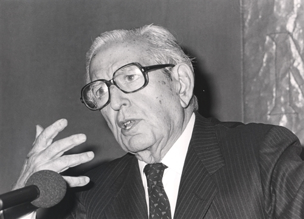
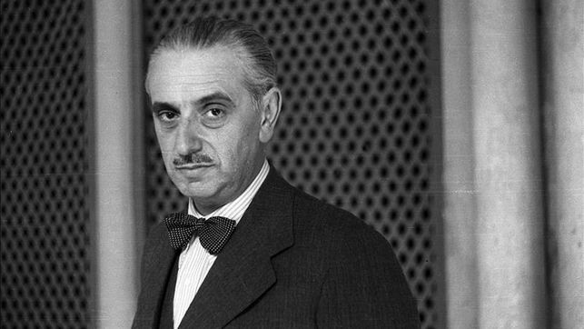
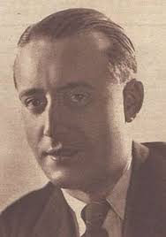

Teatro del 36 hasta el 75
Teatro de posguerra
En la primera posguerra el teatro español sufrió una recesión debido a la falta de referentes, causada por ejemplo por la muerte de Lorca; a la censura que cohartó la libertad creativa; y a que tanto los empresarios como el pú blico eran reacios a grandes innovaciones.
Así pues, nos encontramos con un teatro que bebe de la alta comedia de Benavente, unas composiciones de cierta calidad, con capacidad para provocar emociones como la risa o el llanto pero que se queda en una crítica superficial, fugaz y secundaria ya que su objetivo es amenizar, no provocar la reflexión del espectador.
Los autores más destacados de esta época son Joaquín Calvo Sotelo, Jose María Pemán y Edgar Neville
 Joaquín Calvo Sotelo
 Jose María Pemán
 Edgar Neville
Pasaremos ahora a analizar el teatro renovado o "del disparate"